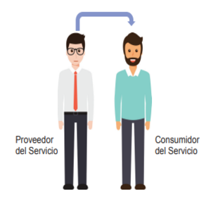
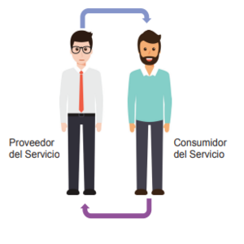
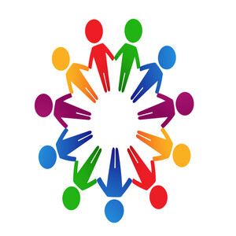

| Co creación del valor | |
|---|---|
|  | AntecedentesHubo un tiempo en que la relación entre el proveedor del servicio y el consumidor del servicio se consideraba como unidireccional y distante. Con el tiempo, las organizaciones reconocieron que el valor se crea de manera conjunta a través de una colaboración activa entre el proveedor de servicios y el consumidor de servicios. |
|  | ¿Qué es?La creación conjunta de valor de productos y servicios a través de una colaboración activa entre el proveedor y el cliente |
|  | ¿Porque es importante?Los proveedores de servicios no deben trabajar de forma aislada para definir el valor para sus clientes y usuarios. Deben establecer relaciones de servicios con los consumidores para co-crear valor. Las relaciones de servicios son mutuamente beneficiosas, las relaciones de servicios interactivas con sus consumidores para comprender la perspectiva de valor del consumidor. Esto permitirá a los consumidores de servicios contribuir a la definición de requisitos, diseño de soluciones de servicios y a la creación de servicios y / o aprovisionamiento de los mismos. |